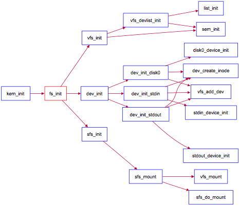

项目组成
Lab8 项目组成
lab8
├── CMakeLists.txt
├── giveitatry.pyq
├── kern
│ ├── debug
│ │ ├── assert.h
│ │ ├── kdebug.c
│ │ ├── kdebug.h
│ │ ├── kmonitor.c
│ │ ├── kmonitor.h
│ │ ├── panic.c
│ │ └── stab.h
│ ├── driver
│ │ ├── clock.c
│ │ ├── clock.h
│ │ ├── console.c
│ │ ├── console.h
│ │ ├── dtb.c
│ │ ├── dtb.h
│ │ ├── ide.c
│ │ ├── ide.h
│ │ ├── intr.c
│ │ ├── intr.h
│ │ ├── kbdreg.h
│ │ ├── picirq.c
│ │ ├── picirq.h
│ │ ├── ramdisk.c
│ │ └── ramdisk.h
│ ├── fs
│ │ ├── devs
│ │ │ ├── dev.c
│ │ │ ├── dev_disk0.c
│ │ │ ├── dev.h
│ │ │ ├── dev_stdin.c
│ │ │ └── dev_stdout.c
│ │ ├── file.c
│ │ ├── file.h
│ │ ├── fs.c
│ │ ├── fs.h
│ │ ├── iobuf.c
│ │ ├── iobuf.h
│ │ ├── sfs
│ │ │ ├── bitmap.c
│ │ │ ├── bitmap.h
│ │ │ ├── sfs.c
│ │ │ ├── sfs_fs.c
│ │ │ ├── sfs.h
│ │ │ ├── sfs_inode.c
│ │ │ ├── sfs_io.c
│ │ │ └── sfs_lock.c
│ │ ├── swap
│ │ │ ├── swapfs.c
│ │ │ └── swapfs.h
│ │ ├── sysfile.c
│ │ ├── sysfile.h
│ │ └── vfs
│ │ ├── inode.c
│ │ ├── inode.h
│ │ ├── vfs.c
│ │ ├── vfsdev.c
│ │ ├── vfsfile.c
│ │ ├── vfs.h
│ │ ├── vfslookup.c
│ │ └── vfspath.c
│ ├── init
│ │ ├── entry.S
│ │ └── init.c
│ ├── libs
│ │ ├── readline.c
│ │ ├── stdio.c
│ │ └── string.c
│ ├── mm
│ │ ├── default_pmm.c
│ │ ├── default_pmm.h
│ │ ├── kmalloc.c
│ │ ├── kmalloc.h
│ │ ├── memlayout.h
│ │ ├── mmu.h
│ │ ├── pmm.c
│ │ ├── pmm.h
│ │ ├── vmm.c
│ │ └── vmm.h
│ ├── process
│ │ ├── entry.S
│ │ ├── proc.c
│ │ ├── proc.h
│ │ └── switch.S
│ ├── schedule
│ │ ├── default_sched.c
│ │ ├── default_sched.h
│ │ ├── default_sched_stride.c
│ │ ├── sched.c
│ │ └── sched.h
│ ├── sync
│ │ ├── check_sync.c
│ │ ├── monitor.c
│ │ ├── monitor.h
│ │ ├── sem.c
│ │ ├── sem.h
│ │ ├── sync.h
│ │ ├── wait.c
│ │ └── wait.h
│ ├── syscall
│ │ ├── syscall.c
│ │ └── syscall.h
│ └── trap
│ ├── trap.c
│ ├── trapentry.S
│ └── trap.h
├── lab5.md
├── libs
│ ├── atomic.h
│ ├── defs.h
│ ├── dirent.h
│ ├── elf.h
│ ├── error.h
│ ├── hash.c
│ ├── list.h
│ ├── printfmt.c
│ ├── rand.c
│ ├── riscv.h
│ ├── sbi.h
│ ├── skew_heap.h
│ ├── stat.h
│ ├── stdarg.h
│ ├── stdio.h
│ ├── stdlib.h
│ ├── string.c
│ ├── string.h
│ └── unistd.h
├── Makefile
├── tools
│ ├── boot.ld
│ ├── function.mk
│ ├── gdbinit
│ ├── grade-rv64-patch.sh
│ ├── kernel.ld
│ ├── mksfs.c
│ ├── sign.c
│ ├── user.ld
│ └── vector.c
└── user
├── badarg.c
├── badsegment.c
├── divzero.c
├── exit.c
├── faultread.c
├── faultreadkernel.c
├── forktest.c
├── forktree.c
├── hello.c
├── libs
│ ├── dir.c
│ ├── dir.h
│ ├── file.c
│ ├── file.h
│ ├── initcode.S
│ ├── lock.h
│ ├── panic.c
│ ├── stdio.c
│ ├── syscall.c
│ ├── syscall.h
│ ├── ulib.c
│ ├── ulib.h
│ └── umain.c
├── matrix.c
├── pgdir.c
├── priority.c
├── sh.c
├── sleep.c
├── sleepkill.c
├── softint.c
├── spin.c
├── testbss.c
├── waitkill.c
└── yield.c
20 directories, 155 files
本次实验主要是理解kern/fs目录中的部分文件，并可用user/*.c测试所实现的Simple
FS文件系统是否能够正常工作。本次实验涉及到的代码包括：
- 文件系统测试用例：
user/*.c：对文件系统的实现进行测试的测试用例； - 通用文件系统接口
user/libs/file.[ch]|dir.[ch]|syscall.c：与文件系统操作相关的用户库实行；kern/syscall.[ch]：文件中包含文件系统相关的内核态系统调用接口kern/fs/sysfile.[ch]|file.[ch]：通用文件系统接口和实行 - 文件系统抽象层-VFS
kern/fs/vfs/*.[ch]：虚拟文件系统接口与实现 - Simple FS文件系统
kern/fs/sfs/*.[ch]：SimpleFS文件系统实现 - 文件系统的硬盘IO接口
kern/fs/devs/dev.[ch]|dev_disk0.c：disk0硬盘设备提供给文件系统的I/O访问接口和实现 - 辅助工具
tools/mksfs.c：创建一个Simple FS文件系统格式的硬盘镜像。（理解此文件的实现细节对理解SFS文件系统很有帮助） - 对内核其它模块的扩充
kern/process/proc.[ch]：增加成员变量struct files_struct *filesp，用于支持进程对文件的访问；重写了do_execve、load_icode等函数以支持执行文件系统中的文件。kern/init/init.c：增加调用初始化文件系统的函数fs_init。
Lab8文件系统初始化过程
与实验七相比，实验八增加了文件系统，并因此实现了通过文件系统来加载可执行文件到内存中运行的功能，导致对进程管理相关的实现比较大的调整。我们来简单看看文件系统是如何初始化并能在ucore的管理下正常工作的。
首先看看kern_init函数，可以发现与lab7相比增加了对fs_init函数的调用。fs_init函数就是文件系统初始化的总控函数，它进一步调用了虚拟文件系统初始化函数vfs_init，与文件相关的设备初始化函数dev_init和Simple FS文件系统的初始化函数sfs_init。这三个初始化函数联合在一起，协同完成了整个虚拟文件系统、SFS文件系统和文件系统对应的设备（键盘、串口、磁盘）的初始化工作。其函数调用关系图如下所示：

文件系统初始化调用关系图
参考上图，并结合源码分析，可大致了解到文件系统的整个初始化流程。vfs_init主要建立了一个device_list双向链表vdev_list，为后续具体设备（键盘、串口、磁盘）以文件的形式呈现建立查找访问通道。dev_init函数通过进一步调用disk0/stdin/stdout_device_init完成对具体设备的初始化，把它们抽象成一个设备文件，并建立对应的inode数据结构，最后把它们链入到vdev_list中。这样通过虚拟文件系统就可以方便地以文件的形式访问这些设备了。sfs_init是完成对Simple FS的初始化工作，并把此实例文件系统挂在虚拟文件系统中，从而让ucore的其他部分能够通过访问虚拟文件系统的接口来进一步访问到SFS实例文件系统。